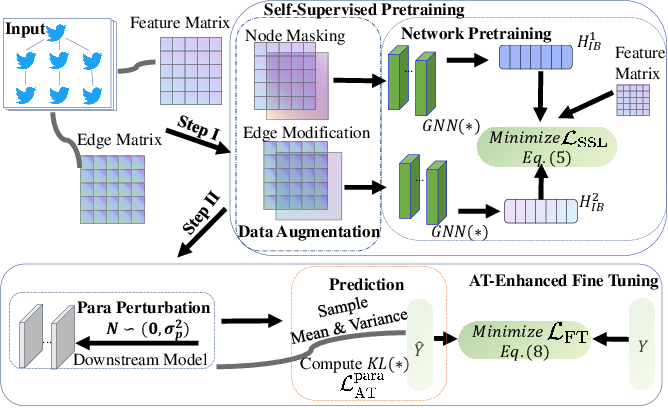

TRUSTRD
Introduction
Title: Towards Trustworthy Rumor Detection with Interpretable Graph Structural Learning
Authors: Leyuan Liu, Junyi Chen, Zhangtao Cheng, Wenxin Tai, Fan Zhou
Abstract: The exponential growth of digital information has amplified the necessity for effective rumor detection on social media. However, existing approaches often neglect the inherent noise and uncertainty in rumor propagation, leading to obscure learning mechanisms. Moreover, current deep-learning methodologies, despite their top-tier performance, are heavily dependent on supervised learning, which is labor-intensive and inefficient. Their prediction credibility is also questionable. To tackle these issues, we present a new framework, TrustRD, for reliable rumor detection. Our framework incorporates a self-supervised learning module, designed to derive interpretable and informative representations with less reliance on large labeled data sets. A downstream model based on Bayesian networks, which is further refined with adversarial training, enhances performance while providing a quantifiable trustworthiness assessment of results. Our methods’ effectiveness is confirmed through experiments on two benchmark datasets.
For source code, please refer to TRUSTRD
If you want to change parameters, dataset or evaluation settings, take a look at